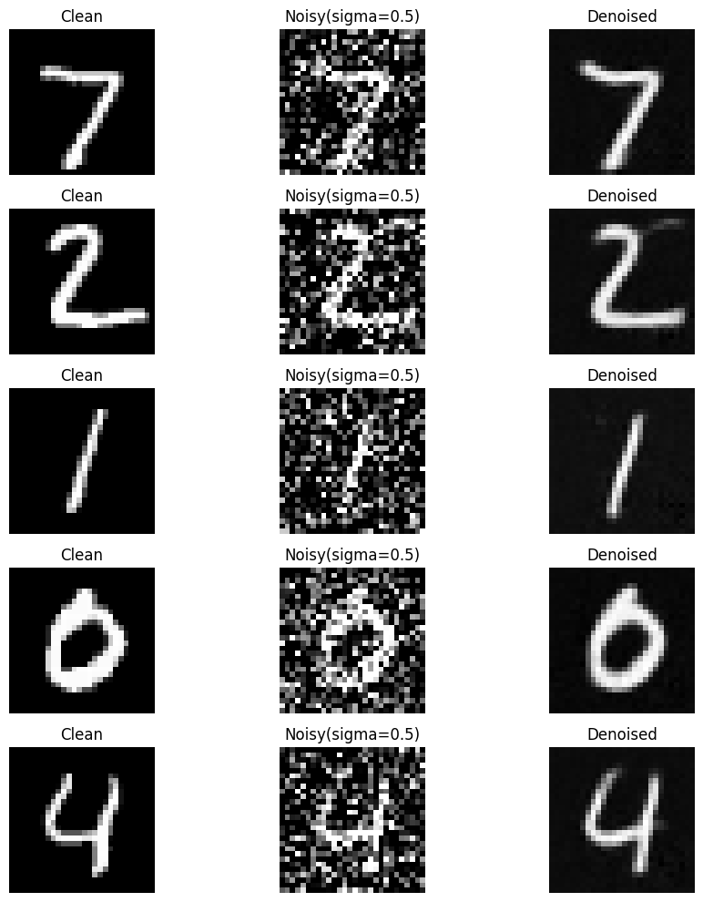

CS180 Project 5
Fun With Diffusion Models
by Ruiqi Wang
Part A: The Power of Diffusion Models
Overview
In the first part of project 5, I denoise random images to actual meaningful images through various algorithm.
This allow me to generate images as prompted from random noise.
1.1 Forward Process
The forward process takes in a clean image and adds noise to it.
At timestep t, I get a noisy imaage by scaling the clean image by sqrt(alpha_cumprod_t) and adding sqrt(1-alpha_cumprod_t) * noise.
Test images at noise level [250, 500, 700]
1.2 Classical Denoising: Gaussian blur filtering
For each noisy test images, I applied gaussian blur filtering to try to denoise them.
The results are not very satisfying: the random color noise are still there, and Campanile is very blurred.
Gaussian blur denoised test images at noise level [250, 500, 700]
1.3 One-Step Denoising
Since Classical Gaussian blur denoising cannot give us good results, we use a diffusion model for denoising.
Using the prompt "a high quality photo", estimate the noise for noisy image at timestep t and remove the estimated noise.
The results are much better than gaussian blurred ones, but when t gets larger, one-step denoising gives result that are not our original image.
One-step denoised test images at noise level [250, 500, 700]
1.4 Iterative Denoising
In order to achieve better denoising, I denoise the image iteratively, with each stride of 30 timesteps.
During each iterative step, I first fetch alpha_cumprod at t and t-1, then calculate alpha and beta at t.
Then, I used the UNET to estimate noise as in one-step denoising. Then, estimate x_0 using current x_t by x_0 = (x_t - sqrt(1 - alpha_cumprod) * noise_est) / sqrt(alpha_cumprod)
Next, update the noisy image x_t to be sqrt(alpha_cumprod_prev) * beta / (1 - alpha_cumprod) * x_0 + sqrt(alpha) * (1 - alpha_cumprod_prev) / (1 - alpha_cumprod) * x_t,
and add predicted variance by UNET.
Finally pass it into next iteration.
Interatively Denoising Process
Iterative Denoising V.S. One-Step Denoising V.S. Gaussian Blur Denoising
Iterative denoising give the best result that is similar to original clean image.
1.5 Diffusion Model Sampling
Using the iterative diffusion model in 1.4, I can generate meaningful images from scratch. To do this, generate a random pure noise and "denoise" it to be an image.
Diffusion model sampling results with prompt "a high quality photo"
The result for this default prompt is not very good, and the images are quite blurred. Prompts with a specific object perform better.
Diffusion model sampling results with prompt "a photo of a man"
1.6 Classifier-Free Guidance (CFG)
The results from 1.5 are usually very blurred and sometimes are not a specific thing but just some colors.
In order to generate images with better quality, I implemented CFG as introduced.
Every step is the same as in 1.5 iterative denoising, except the way I estimate the noise.
While estimating the noise of x_t, I used the UNET twice to estimate two noises: conditional noise with the specific prompt and unconditional noise with the default prompt.
Then, I came up with a guided_noise_est = uncond_noise_est + scale * (noise_est - uncond_noise_est), which combines both noise with scale = 7.
The results are significantly better than withou CFG.
CFG Diffusion model sampling results with prompt "a high quality photo"
CFG Diffusion model sampling results with prompt "a photo of a man"
1.7 Image-to-image Translation
To do an Image-to-image translation, I took a clean image, and add different levels of noise to it.
Then, I took the noisy image as my starting image and do a iterative denoising with cfg to it.
This would lead to some "creative" edits to the image, and gives us a clean image that is not completely same as the original clean image.
In fact, the larger the noise level, denoised image and original image would be more different.
I used the provided code to download web images and preprocess them.
Original Images

Original Campanile
Results for Campanile
Results for A Christmas Tree
Results for a JellyCat Cake
1.7.1 Editing Hand-Drawn and Web Images
Following the same procedure as above, I can bring hand-drawn images and cartoon images into real world.
I can denoise the un-real images and denoise it to edit its contents.
The larger the noise level is(smaller start_i), the more edits shall be made by the model. When noise level is small, results are similar to original image; when noise level is large, the results are more different to original image.
Web Image: Mickey Mouse
Result for Mickey Mouse
Hand-Drawn Images: Cat and Flower
Result for Cat
Result for Flower
1.7.2 Inpainting
To do an Inpainting, I follow the same procedure as the above except that I have another mask.
I took a clean image, and add different levels of noise to it.
Then, I took the noisy image as my starting image and do a iterative denoising with cfg to it.
In each iterative denoising step, after I got x_t-1, I force it by the mask that, only the selected parts of the image will change, and other parts will stay the same as noisy_image at timestep t
This would lead to some "creative" edits to the image, but the changes are limited to the portion indicated by the mask.
I used the prompt "a high quality photo" for all following results.
Campanile
Original Campanile

Mask

Mask on Image
Christmas Tree
JellyCat Cake
1.7.3 Text-Conditional Image-to-image Translation
To do a text-conditinal image-to-image translation, simply follow the same procedure, and change the imput prompt to be some other texts.
Results for Campanile with prompt "a rocket ship"
Results for Christmas Tree with prompt "a rocket ship"

Results for JellyCat Cake with prompt "an oil painting of a snowy mountain village"
1.8 Visual Anagrams
In this part, I want to create an image that looks like prompt1 normally and looks like prompt2 upside down.
To do this, reuse the iterative denoising model with cfg, and change the estimated noise in each iterative step:
First, use prompt1 on normal image to get estimated noise1, and apply cfg to it;
Then flip the image, use prompt2 on flipped image to get estimated noise2, and apply cfg to it.
Note that here, unconditional prompt should also be used on flipped image.
After cfg, flip the guided noise2 back.
Finally, the combined estimated noise should be the average of these two noises. Use the combined noise in the iterative step as before to get an anagram.
Results:
1.9 Hybrid Images
In this part, I want to create an image that looks like prompt1 from far away and looks like prompt2 closely.
To do this, reuse the iterative denoising model with cfg, and change the estimated noise in each iterative step:
First, use prompt1 on the image to get estimated noise1, and apply cfg to it, then pass it into a low pass filter(Gaussian);
Then, use prompt2 on the image to get estimated noise1, and apply cfg to it, then pass it into a high pass filter(image - Gaussian(image));
Finally, sum up the two noises to get the combined estimated noise. Use the combined noise in the iterative step as before to get a hybrid.
Results:
Skull & People around Campfire
Part B: Diffusion Models from Scratch
Part 1: Training a Single-Step Denoising UNet
1.1 Implementing the UNet
Implementing Simple and Composed Ops
For each standard tensor operations, I used nn.Seuquential() in its __init__ function to build a sequence of baisc operations as described, and call them in forward() function.
Implementing Unconditional UNet
In __init__ function, I initiate all required simple operation objects according to the design graph. In foward(), I use the operation objects in order to get final result.
1.1 Using the UNet to Train a Denoiser
Generating datasets
To load batches of clean images from MNIST dataset and generate corresponding noisy images, I implemented helper functions load_mnist(train=True, batch_size=256, shuffle=True) and add_gaussian_noise(images, sigma=0.5).
load_mnist returns a DataLoader that loads a batch of clean images of size = batch_size. add_gaussian_noise add noise * sigma to the clean image x and returns the noisy image z, (z, x) can be used for training.
Visualization of Noising Process:
1.2.1 Training
Dataset and dataloader: Used load_mnist to load training data with batch size of 256. Train for 5 epochs.
Model: Use dthe UNet hidden dimension D = 128.
Optimizer: Use Adam optimizer with learning rate of 1e-4.
For each training batch, use add_gaussian_noise with sigma=0.5 to get noisy images z.
Run forward process and back process, then record the loss for the batch.
After each epoch, record the model to drive for backup, and visualize after epoch 1 and epoch 5
Training Loss Curve
Epoch 1
Epoch 5

1.2.2 Out-of-Distribution Testing
The model is trained with sigma = 0.5. Sample some images and noise them by different sigma values. The model's performance is not very good for these out of distribution samples.
Part 2: Training a Diffusion Model
Now, instead of prediction the clean image directly, I train a model to predict the noise, which then helps me to denoise the image. Here, use iterative denoising as in partA.
Other helper functions
First, I defined a helper function to generate betas, alphas and alphas_cumprod. Given beta_0 and beta_T, generate betas between them with equal difference.
Then, alpha = 1-beta and alpha_cumprod as the cumulative product of alphas.
Also, I defined a helper function add_noise_with_t(x0, t, alpha_cumprod), which generate a noise, compute x_t as equation A.2, and return x_t and noise.
2.1 Adding Time Conditioning to UNet
Implementing FCBlock
I used nn.sequential again in FCBlock __init__(). In foward(), call nn.sequential. Here I reshape the out put to be (N, D, 1, 1) to align the shape.
Implementing Time Conditional UNet
In __init__ function, I initiate all required simple operation objects like for unconditional UNet, with two more time-conditioned blocks.
Since conditional signal t is scalar, we should initialize FCBlock with in_channels = 1.
In foward(), I add t1 after unflatten, and add t2 after up1.
2.2 Training
Initialize dataloader with batch_size=128 and Class Conditional UNet model with in_channels=1, num_classes=1, num_hiddens=64.
Then, create a Adam optimizer with an initial learning rate of 1e-3, and an exponential learning rate decay scheduler with a gamma of 0.1^(1/num_epochs)
Use Min-Squared Error as loss function. Start training with 20 epochs.
In each epoch, load a batch of training data. Run forward process on the batch and record the loss, then run backward process.
After every epoch, do scheduler.step() and save current model for backup. After every 5 epochs, sample 64 images and evaluate them using the model.
Forward Process
For each batch, first generate random timesteps of size N=batch_size for each image in the batch, then add noise of timestep t for each image.
Normalize t and pass the training data (x_0, x_t, normalized_t) to the model to train.
Training Loss Curve
2.3 Sampling
First generate 64 random images, and iteratively denoise the samples using the iterative approach in part A
except that I used the time conditional unet model to estimate noise in each iterative step.
In each iterative step, generate a tensor of shape (num_samples, ) and each element is t/T (normalized).
Pass normalized t and x_t to time conditional UNet model to estimate noise. noise z is standard noise if t>1 and 0 otherwise.
Finally, use the equation to update x_t and go to next iterative step.
Sampling after every 5 epochs
Epoch 5
Epoch 10
Epoch 15
Epoch 20
2.4 Adding Class-Conditioning to UNet
Implementing Time Conditional UNet
In __init__ function, I initiate all required simple operation objects like for time conditional UNet, with two more class-conditioned fcblocks.
Since conditional signal t is scalar, we should initialize FCBlock with in_channels = 1.
Since conditional signal c is should have size (N, num_classes=10), we should initialize FCBlock with in_channels = num_classes.
In foward(), I added two conditioning steps: c1 * unflatten + t1, and c2 * up1 + t2.
Training
Initialize dataloader with batch_size=128 and Class Conditional UNet model with in_channels=1, num_classes=10, num_hiddens=64 and probability of dropping class conditional of 0.1 during training.
Then, create a Adam optimizer with an initial learning rate of 1e-3, and an exponential learning rate decay scheduler with a gamma of 0.1^(1/num_epochs)
Use Min-Squared Error as loss function. Start training with 20 epochs.
In each epoch, load a batch of training data. Run forward process with classes of the data in the batch and record the loss, then run backward process.
After every epoch, do scheduler.step() and save current model for backup. After every 5 epochs, sample 64 images and evaluate them using the model.
Forward Process
For each batch, first generate random timesteps of size N=batch_size for each image in the batch, then add noise of timestep t for each image.
Normalize t to pass to the training model.
Then, using classes of the data in the batch, c, generate a one-hot version of c using torch.nn.functional.one_hot with num_classes=10. c_onehot has shape (batch_size, num_classes).
To drop out class with prob=0.1, generate a mask of 0(dropout) and 1(keep). Use torch.bernoulli with prob=1-p_uncound and reshape it to (N, 1).
c_onehot = c_onehot * mask to drop 10% of the classes.
Finally, pass normalized_t, c_onehot and x_t to the class conditional unet model for training. Compute and record the loss for current batch.
Training Loss Curve
2.5 Sampling from the Class-Conditioned UNet
I want 4 samples in each class, so first generate 4*10 = 40 random images, and iteratively denoise the samples using the iterative approach in part A
except that I used the class conditional unet model to estimate noise in each iterative step.
For those 40 samples, generate a c consisting four 0s, four 1s, ..., four 10s, and turn it into a one-hot tensor of shape (40, 10)
In each iterative step, generate a tensor of shape (num_samples, ) and each element is t/T (normalized).
Then, estimate two noises: unconditioned and conditioned.
Pass normalized t, one-hot c and x_t to UNet model to estimate conditional noise, and pass one-hot tensor of all 0s for unconditional estimated noise.
Combine the estimated conditional and unconditional noise by sclae gamma=5. Noise z is standard noise if t>1 and 0 otherwise.
Finally, use the equation to update x_t and go to next iterative step.
Sampling after every 5 epochs
Epoch 5
Epoch 10
Epoch 15
Epoch 20